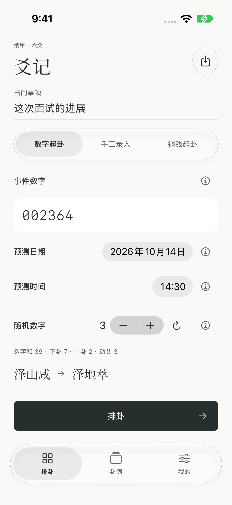
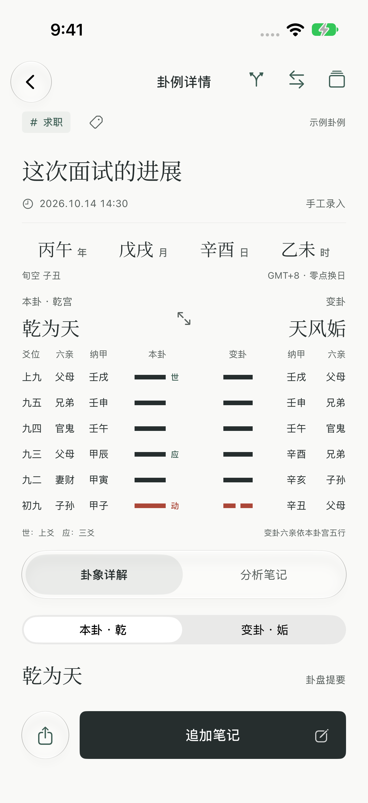
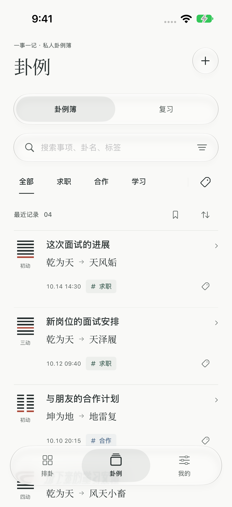

三种起卦，各得其便
数字起卦、手工录入、铜钱起卦。初爻在下，上爻在上；本卦、变卦与动爻清楚相对。
iPhone · iPad
起卦有序，记事有据。
一张卦盘，一次思考。
把排卦、记录与经典阅读，留在一处。



实际界面 · 图中内容为演示卦例
从起卦到回看
数字起卦、手工录入、铜钱起卦。初爻在下，上爻在上；本卦、变卦与动爻清楚相对。
先读简明释义，再按需展开卦意与逐爻详解。《周易》原文与现代编辑说明分列，保留查阅的层次。
保存卦例、补充分析笔记、添加自己的标签。用检索、对照与复习，把零散记录整理成自己的资料库。
日常排卦、阅读和截图识别在设备上完成。支持主动导入、导出完整备份；不必建立账号。
保持简单
适用于 iOS 18 或更新版本的 iPhone 与 iPad。
传统文化学习与个人记录工具。卦象释义不构成医疗、法律或投资建议。官网不提供在线排盘或接收私人卦例。